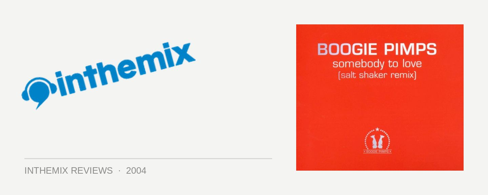

The Boogie Pimps - Somebody to Love
(Ministry of Sound Records)
Taking old tunes and regurgitating them has been a mainstay of dance music since day one; for a few recent examples, think the Jason Nevins mix of It’s Like That, Layo & Bushwacka’s take on Billie Jean, and a million others and counting. While these ‘reinterpretations’ are often utter crap pure and simple, the Boogie Pimps’s take on the Jefferson Airplane classic Somebody to Love is fortunately an inspired appropriation. A tune that has been floating around many a DJ box over the summer, Ministry of Sound have now released it as a CD single for the listening pleasure of the dance community.
Consisting of Mark J and Mirko Jacob, the Boogie Pimps are a production duo that have emerged out of East Germany, apparently big players in their small hometown of Erfurt. And with Somebody to Love having already topped the dance charts and DJ playlists all over Germany, there’s no doubt that they’ve produced quite a crankin’ little tune. While Somebody to Love starts off as a deceptively simple house tune, things blow right off the richter-scale when the chorus drops and Grace Slick begins her familiar warble; “When the truth is found to be lies / And all the joy within you dies.” Who would have thought that a Jefferson Airplane sample could sound so damn good?
The only thing that lets down Somebody to Love is some questionable production choices made by the Boogie Pimps. Mainly, their decision to overlap and start-stop the chorus vocals in an annoying fashion. It’s just irritating, and the track stands up well without it. Strangely, the best mix can’t even be found on the single; the Moobootica mix featured on Mark Dynamix’s 2004 Annual CD was where Somebody to Love was initially revealed to the Australian public, and it instead just lets the chorus play out much more satisfyingly. The vocal sample sounded superb to begin with, why mess with it?
Criticisms aside, the Boogie Pimps are onto a good thing with Somebody to Love, and their choice of sampling was certainly an inspired one. If you can overlook the annoying vocal overlapping in the chorus, Somebody to Love makes for one of the best reappropriations of a classic track that we’ve heard in a long time. With that said, listeners may want to skip straight to the 2004 Annual CD to hear the track at its finest.